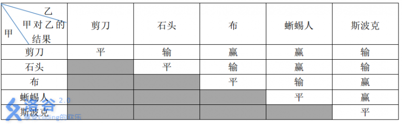

3.6.9. 查表的技巧：生活大爆炸版石头剪刀布（洛谷P1328）¶
题目描述
石头剪刀布是常见的猜拳游戏：石头胜剪刀，剪刀胜布，布胜石头。如果两个人出拳一样，则不分胜负。在《生活大爆炸》第二季第8集中出现了一种石头剪刀布的升级版游戏。
升级版游戏在传统的石头剪刀布游戏的基础上，增加了两个新手势：
斯波克：《星际迷航》主角之一。
蜥蜴人：《星际迷航》中的反面角色。
这五种手势的胜负关系如表一所示,表中列出的是甲对乙的游戏结果。
现在，小A和小B尝试玩这种升级版的猜拳游戏。已知他们的出拳都是有周期性规律的，但周期长度不一定相等。例如：如果小A以“石头-布-石头-剪刀-蜥蜴人-斯波克”长度为 \(6\) 的周期出拳，那么他的出拳序列就是“石头-布-石头-剪刀-蜥蜴人-斯波克-石头-布-石头-剪刀-蜥蜴人-斯波克-……”，而如果小B以“剪刀-石头-布-斯波克-蜥蜴人”长度为 \(5\) 的周期出拳，那么他出拳的序列就是“剪刀-石头-布-斯波克-蜥蜴人-剪刀-石头-布-斯波克-蜥蜴人-……”
已知小A和小B一共进行 \(N\) 次猜拳。每一次赢的人得 \(1\) 分，输的得 \(0\) 分；平局两人都得 \(0\) 分。现请你统计 \(N\) 次猜拳结束之后两人的得分。
输入格式
第一行包含三个整数：\(N,N_A,N_B\)，分别表示共进行 \(N\) 次猜拳、小A出拳的周期长度，小B出拳的周期长度。数与数之间以一个空格分隔。
第二行包含 \(N_A\) 个整数，表示小A出拳的规律，第三行包含 \(N_B\) 个整数，表示小B出拳的规律。其中，\(0\) 表示“剪刀”，\(1\) 表示“石头”，\(2\) 表示“布”，\(3\) 表示“蜥蜴人”，\(4\) 表示“斯波克”。数与数之间以一个空格分隔。
输出格式
输出一行，包含两个整数，以一个空格分隔，分别表示小A、小B的得分。
输入输出样例
输入 #1：
10 5 6
0 1 2 3 4
0 3 4 2 1 0
输出 #1：
6 2
输入 #2：
9 5 5
0 1 2 3 4
1 0 3 2 4
输出 #2：
4 4
说明/提示
对于 \(100\%\) 的数据，\(0 < N \leq 200, 0 < N_A \leq 200, 0 < N_B \leq 200\)。
题解
本题的核心在于查表，查表的核心在于怎样设计一个合理的表。
所谓合理的表，既要能方便地利用输入数据来查找结果，又要能方便地使用查表得到的结果来构造问题的解。一般有两种方法，要么是从表格本身出发，先设计好表格，然后根据表格提供的查表结果来设计如何构造问题的解；要么从问题的解出发，先设计好怎样构造问题的解，然后根据构造解所需要的信息来设计表格。本题我们采用后一种方法。
怎样构造本题的解呢？本题的解是小A和小B两个人的得分，所以很显然我们需要两个变量，分别存放小A和小B的得分。这种情况最方便的方法是用一个数组 bonus 来放二人的得分，可以让 bonus[0] 表示小A的得分，bonus[1] 表示小B的得分。为了让代码看起来更加易读，可以定义两个常量来作为小A、小B的编号：
const int A = 0, B = 1;
这样就可以用 bonus[A] 来表示小A的得分，bonus[B] 来表示小B的得分，代码的含义就一下子清楚了很多，
接下来要根据每一轮小A和小B的出拳来判断胜负并相应进行加分，为此首先要知道每一轮他俩各自出什么拳。根据题意，他们二人出拳都是周期性的，可以用二维数组 periods[2][200] 分别存放小A和小B的一个出拳周期，用数组 t[2] 存放他们各自的周期长度。按照周期数列取数规律不难算出，第 \(i\) 轮时小A出的是 periods[A][i % t[A]]，小B出的是 periods[B][i % t[B]]。这里要注意轮数 \(i\) 的取值范围是 \([0, n)\)。这是根据C++语言数组从0开始计数的原则来的，如果要按照日常习惯从1开始计数，那么计算公式就要相应修改。不过仔细体会一下不难发现，从0开始计数的规则在这里让问题变得简单了一些。
现在用来构造解的基本构件都已经齐全了，只要利用一个循环来计算每一轮小A和小B各自的得分，并加到 bonus 数组的相应元素上去即可。如果直接使用题目中给出的规则表行不行？当然可以，但是实际试一试就会发现其实并不是很好用。如果我们能够根据二人的出拳情况，直接查表查到这一轮谁获胜，比如查到0表示小A获胜，1表示小B获胜，即查表结果为获胜者的编号，那么直接给这个编号的得分加一分就好了，这样就非常方便了。所以更好的办法设计一个“胜负表”，而不是“得分表”。这个表格应该是一个二维数组 rules[5][5]，第一维表示小A的出拳，第二维表示小B的出拳，对应的元素是获胜者的编号，可以用下面的方式获取：
rules[periods[A][i % t[A]]][periods[B][i % t[B]]] // 这是获胜者的编号
所以我们要根据题目给出的胜负规则，设计这样一张5×5的胜负表。比较麻烦的是平局的情况，因为题目中说平局的时候，谁都不得分，所以表示平局的表格项该填什么好呢？似乎填表示小A的0也不对，填表示小B的1也不对，怎么办？答案是既然谁也不能填，那就干脆填一个谁也不是的虚假编号。我们假设有一个小C存在，他代表平局时的获胜者，出现平局就给小C加一分，当然小C的编号是2号，相应地在得分表里也增加一个元素 bonus[2] 用来存放小C的得分。在设计胜负表的时候，平局就是神秘的2号选手小C获胜。
因为小C是虚拟的，所以他的分数最后也没有什么用，题目需要输出的解仍然只是 bonus[A] 和 bonus[B] 而已。但是如果本题的得分规则改成足球联赛的规则，即获胜得3分，失败得0分，平局各得1分的话，那么小C的得分就有用处了。想一想为什么？要怎么用？这是本节的练习题哦。
在看下面的代码之前，请先自己设计好胜负表，然后再和代码中给出的胜负表进行对照。下面的AC代码本身非常简单，本题主要的技巧在于二维数组的灵活运用和查表的设计，编程时要注意的是二维数组之间相互嵌套的下标，虽然很费眼神，但却是书面考试时经常要考到的代码类型，要多练习书写和阅读这样的代码。
#include <cstdio>
int main()
{
const int A = 0, B = 1; // 小A、小B的编号
// 胜负规则表，rulues[a][b] 表示小A出a、小B出b 时谁获胜，平局二人都不加分
const int rules[5][5] = {
{ 2, B, A, A, B },
{ A, 2, B, A, B },
{ B, A, 2, B, A },
{ B, B, A, 2, A },
{ A, A, B, B, 2 } };
int n, t[2], periods[2][200], bonus[3] = { 0 };
// 读取游戏轮数、小A和小B的出拳周期长度
scanf("%d %d %d", &n, &t[A], &t[B]);
// 读取小A的出拳周期
for (int i = 0; i < t[A]; ++i) scanf("%d", &periods[A][i]);
// 读取小B的出拳周期
for (int i = 0; i < t[B]; ++i) scanf("%d", &periods[B][i]);
// 从 0 到 n - 1，模拟 n 轮出拳的情况，并查表得到获胜者，给获胜者加一分
for (int i = 0; i < n; ++i)
++bonus[rules[periods[A][i % t[A]]][periods[B][i % t[B]]]];
// 输出结果
printf("%d %d\n", bonus[A], bonus[B]);
return 0;
}
练习
本题的得分规则改成足球赛得分规则，即每一轮获胜得3分，失败不得分，平局双方各得1分，再次完成本题。
3.6.10. 查表的技巧：迎春舞会之数字舞蹈（洛谷P1538）¶
题目背景
HNSDFZ的同学们为了庆祝春节，准备排练一场舞会。
题目描述
在越来越讲究合作的时代，人们注意的更多的不是个人物的舞姿，而是集体的排列。
为了配合每年的倒计时，同学们决定排出——“数字舞蹈”。顾名思义就是所有人一起排成若干个数字 -___-|||| 更为创新的是，每个人都是趴在地上，保证横竖。
现在给出数字及其要求摆出的大小，请你编程，模拟同学们的优美姿态。
输入格式
第一行为k。k表示要摆出数字的大小。
第二行为全部由数字组成的字符串，即要摆出的几个数字。
输出格式
按题目要求输出。
输入输出样例
输入 #1：
2
1234567890
输出 #1：
-- -- -- -- -- -- -- --
| | | | | | | | | | | | | |
| | | | | | | | | | | | | |
-- -- -- -- -- -- --
| | | | | | | | | | | | |
| | | | | | | | | | | | |
-- -- -- -- -- -- --
.
说明/提示
除了第一个数字之外，每个数字之前有1个空格，所有数字全部对齐。
k<=30，s的长度不超过255
建议大家直接输出，不要保存。
如果对于大小和k有疑问，请自行理解。
题解
本题又是一个典型的查表模拟题，不同的是这次要查的表里面存放的不是数据，而是图形，或者说是“图纸”。
先仔细观察输出样例的图形特点，可以归纳出以下几点：
每两个数字之间隔开一个空列，最后一个数字之后没有空列。
每一个数字占用 \(k+2\) 列，\(2k+3\) 行。
如果用 \(k=1\) 的情况来画出图纸，那么每个数字占用3列5行，其中第0、2、4三行为横线行，第1、3两行为竖线行。
如果有了 \(k=1\) 的图纸，就可以用来画出任意大小的数字，方法为按照图纸的第0行到第4行依次画出横线、竖线或空格。横线行为“两端各一个空格、中间连续 \(k\) 个 '-'”，每个竖线行连续画 \(k\) 遍，均为“左右两端根据图纸可能为一个 '|' 可能为一个空格、中间为连续 \(k\) 个空格”。
手绘一下 \(k=1\) 的图纸：
- - - - - - - -
| | | | | | | | | | | | | |
- - - - - - -
| | | | | | | | | | | | |
- - - - - - -
.
画完图纸，把图纸变成一张可以用来查询的表格，方法有许多许多，这里介绍其中一种。用一个二维整型数组 int paper[5][10] 来存放图纸，其中第一维度表示行，第二维度表示数码，比如 paper[0][0] 表示数码0的第一行要怎么画、paper[3][6] 表示数码6的第4行怎么画。
在图纸数组的第0、2、4行，用数字0表示没有横线、1表示有横线；第1、3行，用数字0表示没有竖线、1表示左端有竖线、2表示右端有竖线、3表示两端都有竖线。
现在应该可以轻松地搞定这个题目了吧，只要仔细就行。编程时要注意，读取输入的第二行不能用整数，要读成字符串。另外，在还不会用堆栈等数据结构的时候，用数组来生成每一行的输出，要注意数组的长度，注意逐个字符画线条的时候的位置下标，还要注意数字图形之间的空列。
练习
在洛谷网站完成本题。强烈建议自己设计另外一种表示图纸的方式。